Simulink Basics Tutorial: Interaction With MATLAB
Contents
In this page we will examine three of the ways in which Simulink can interact with MATLAB.
- Block parameters can be defined from MATLAB variables.
- Signals can be exchanged between Simulink and MATLAB.
- Entire systems can be extracted from Simulink into MATLAB.
Block parameters from MATLAB variables
Often a controller will be designed in MATLAB and verified within a Simulink model. Commonly, numerical parameters such as gains and controller transfer functions are entered into Simulink manually by entering the corresponding numbers into the block dialog boxes. Rather than enter numbers directly, it is also possible to use MATLAB variables in the Simulink block dialog boxes.
Consider, for example, the Simulink model from the Simulink Basics tutorial which is shown in the figure below. You can recreate this model yourself, or you can download it here.
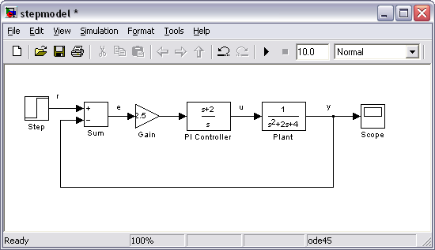
In this case, the complete controller transfer function is the following.
(1)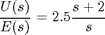
Suppose this transfer function were generated by some computation in MATLAB. In this case, there would most likely be three variables, the numerator polynomial, the denominator polynomial, and the gain. Enter the following commands in MATLAB to define these variables.
K = 2.5; num = [1 2]; den = [1 0];
These variables can now be used within blocks in the Simulink environment. In your Simulink model, double-click on the Gain block and enter "K" in the Gain field as shown below.
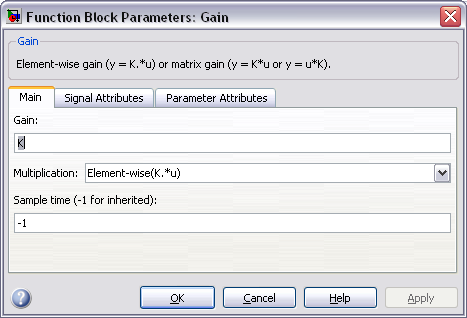
Now close this dialog box. Notice that the Gain block in the Simulink model now shows the variable K rather than a number.
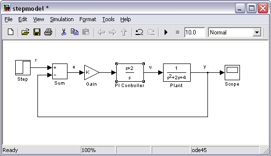
Next, double-click on the PI Controller block. Enter "num" into the Numerator Coefficient field and "den" into the Denominator Coefficient field as shown below.
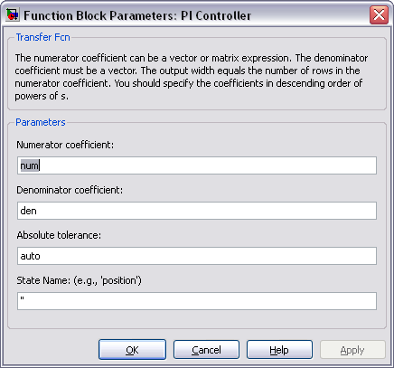
Close this dialog box. Notice now that the PI Controller block shows the variables num and den (as functions of s) rather than an explicit numerical transfer function.
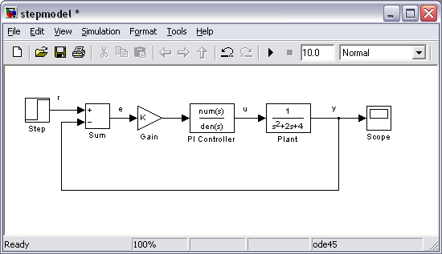
You can then simulate the model with the MATLAB variable parameters. Select Start from the Simulation menu to run the simulation. Double-click on the Scope block to view its output. Hit the autoscale button (binoculars) and you should see the following.
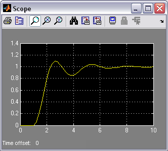
Now, if any calculations are done in MATLAB to change any of the variables used in the Simulink model, the simulation will use the new values the next time it is run. To try this, change the gain K within MATLAB by entering the following at the command prompt.
K=5;
Start the simulation again, bring up the Scope window, and hit the autoscale button. You will see the following output which reflects the new, higher gain.
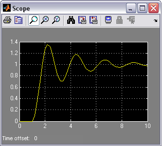
To download the Simulink model with MATLAB variable parameters, click here.
Exchanging signals with MATLAB
Sometimes, we would like to use the results of a Simulink simulation in the MATLAB command window for further calculations and plotting. Less often, we would like to generate signals in MATLAB which we can then use as inputs in a Simulink model. These tasks are accomplished through the use of the To Workspace block from the Sinks library and the From Workspace block found in the Sources library. We will only transfer signals from Simulink to MATLAB. Doing the reverse is a very similar process.
The To Workspace block saves a signal as a vector (or structure) in the MATLAB workspace. Open the model which you used previously in this tutorial or click here to download the model. Be sure that the variables K = 5, num = [1 2], and den = [1 0] are defined in the MATLAB workspace.
We would like to use both the output signal y and the control signal u for calculations in MATLAB. We will save these two variables as well as a time signal from our Simulink model. First, we need to generate an explicit time signal. Open the Sources library by double-clicking the Sources icon in the main Simulink Library Browser window. Drag the Clock block from the Sources window to the lower portion of your Simulink model as shown below.
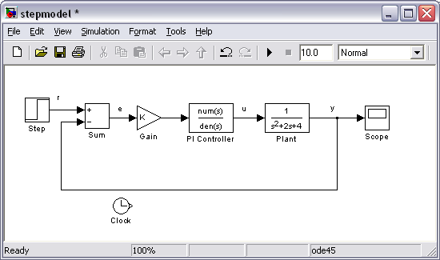
Now, open the Sinks library and drag three instances of the To Workspace block into your Simulink window, arranged approximately as shown below.
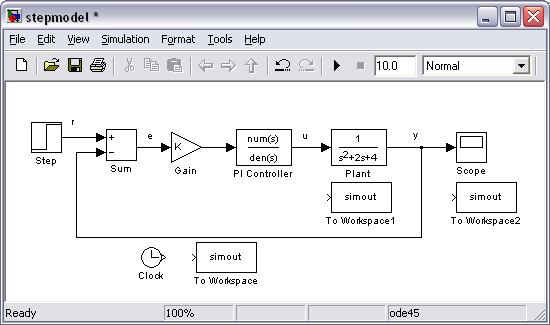
Before connecting these blocks to the rest of your system, name the variables where the data is stored in the MATLAB workspace. The lower To Workspace block will output the time signal, hence we will store this data in the MATLAB variable t. Double-click on this block and enter "t" in the Variable Name field as shown below. Also change the entry in the Save format field from the default of Structure to Array.
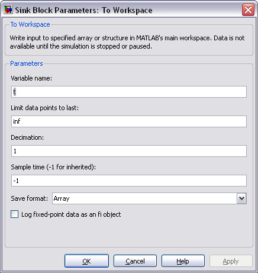
Now close the dialog box. Notice that the lower To Workspace block displays a t.
The To Workspace block near the Plant block will output the control signal to a MATLAB variable we've named u. Again define the variable name for this block by entering "u" into the the Variable Name field and choose Array from the drop-down menu in the Save format field. The last To Workspace block will output the output signal to the MATLAB variable y by repeating the steps above. Also, for better clarity, change the labels (by clicking on the existing labels "To Workspace") of these blocks to "time", "control", and "output". Your model should appear as follows.
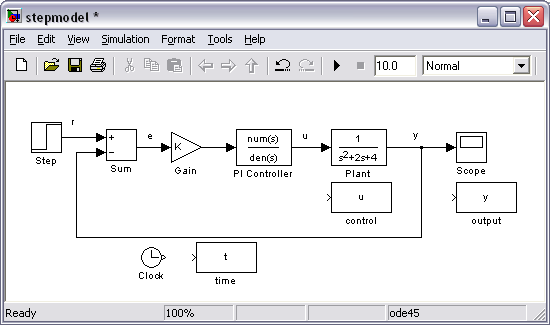
Now, you will connect these blocks to the rest of your system. Draw a line from the Clock block to the time (t) block. Tap a line off of the control signal (the line between the PI Controller block and the Plant block) and connect it to the control (u) block. Remember, to tap off an existing line, hold the Ctrl key while drawing the line. You can also tap off a line by right-clicking. Tap a line off the output signal line (the line which enters the Scope block) and connect it to the output (y) block. Your system should appear as follows.
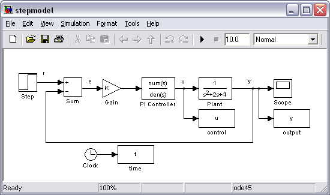
Start the simulation (Start from the Simulation menu). You can still view the output in the Scope window (remember autoscale).
You can now examine the variables saved to the MATLAB workspace. Plot u and y vs. t by entering the following commands.
plot(t,u,t,y);
Note that it is important to plot each of these variables against the time vector generated by Simulink. This is because the time between elements in the signal vectors may be unequal if a variable-step solver is employed. This is particularly the case near a discontinuity such as the step input (anywhere the signals are changing rapidly). Your plot of u (blue) and y (green) should appear as follows.
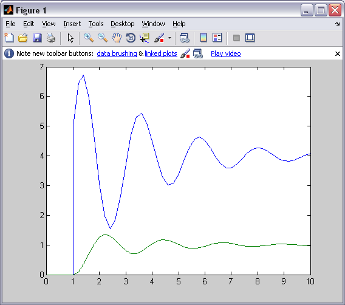
To download the model with outputs to MATLAB variables, click here.
Instead of employing To Workspace blocks, you can also output data to the MATLAB workspace using your Scope block. Specifically, if you double-click on your Scope and select the Parameters icon you will open the following dialog box. Under the History tab, you can select the box Save data to workspace. Here you can also define the Format of the data and the Variable name to which the data is saved. In this case, the data will be output as a matrix with the first column corresponding to simulation time, and subsequent columns corresponding to the signals being fed to the Scope block.
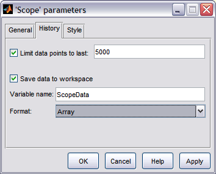
Furthermore, you do not always need to define a clock to generate the simulation time vector. By default, Simulink will ouput a vector tout to the MATLAB workspace that includes the simulation time. This vector, however, is limited to a size of 1000 elements.
Extracting models from Simulink into MATLAB
It is also sometimes useful to extract a simulation model from within Simulink into the MATLAB workspace. This is especially true for situations where your simulation model is complicated or nonlinear. This extraction can be accomplished with the MATLAB command linmod, or from within the Simulation model itself as we will demonstrate here.
We will employ the Simulink model with variables defined above (download here). First, choose from the menus at the top of the model window Tools > Control Design > Linear Analysis. This will cause the Linear Analysis Tool window to open. In order to perform our extraction/linearization, we need to identify the inputs and outputs for the model and the operating point that we wish to perform the linearization about. We will extract the closed-loop model from the reference r to the output y. Right-click on the signal representing the reference r in the Simulink model. Then choose Linearization Points > Input Point from the resulting menu. Similarly, right-click on the output signal of the model (y) and select Linearization Points > Output Point from the resulting menu. The resulting input and output should now be identified on your model by arrow symbols as shown in the figure below.
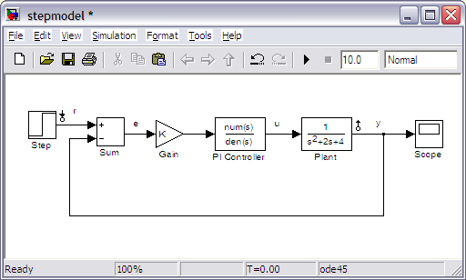
Next we need to identify the operating point to be linearized about. Since our model is already linear, any choice will produce the same output. Therefore, we can leave the Operating Point field in the Linear Analysis Tool window as its default, Model Initial Condition. We can also leave the Plot Result field as the default of a New Step since that is the type of input employed in the above simulations. The Linear Analysis Tool window should appear as follows.
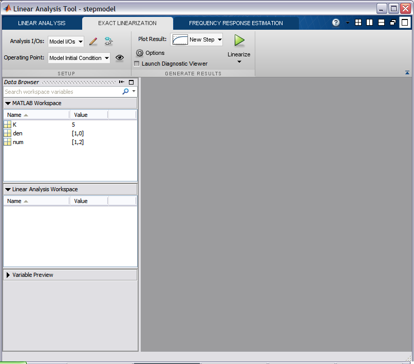
- Finally, click the Linearize button indicated by the green triangle. This automatically generates a step response plot and the model linsys1 as shown below.
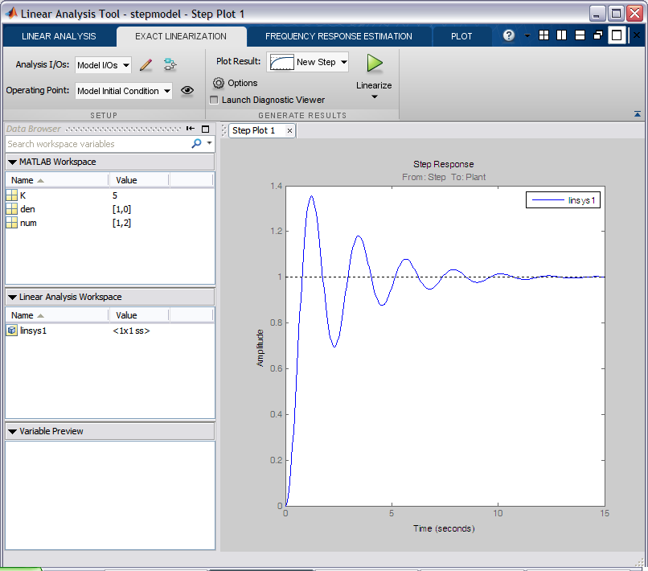
The above step response exactly matches the results achieved from running the simulation because the Simulink model was already linear. We can then export the resulting linearized model into the MATLAB workspace for further analysis and design. This can be accomplished by simply dragging the linsys1 object from the Linear Analysis Workspace to the MATLAB Workspace.